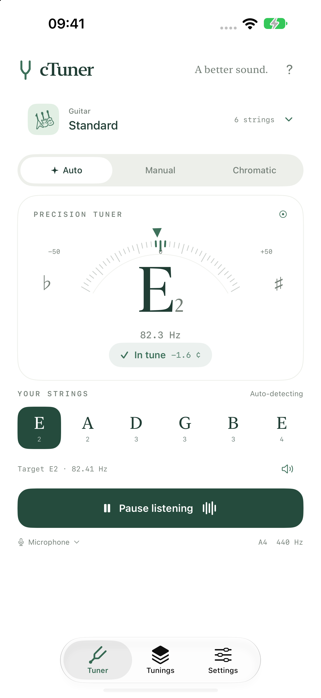

Choose your flow.
Auto finds the closest preset string. Manual holds the string you select. Chromatic explores all twelve notes.
A little tune. A better sound.
Choose a tuning, pluck a string, and follow the dial toward the center. A calm, clear place to find your instrument’s voice.
Get tuning helpRead our privacy policy
Auto finds the closest preset string. Manual holds the string you select. Chromatic explores all twelve notes.
27 presets for guitar, ukulele, violin, bass, viola, cello, mandolin and banjo. Make your own with up to twelve strings.
Use the microphone or a compatible USB or wired audio interface. Audio is analyzed on your device and never saved or uploaded.
Portrait and landscape layouts, light and dark appearance, reference tones, calibration and clear tuning feedback.